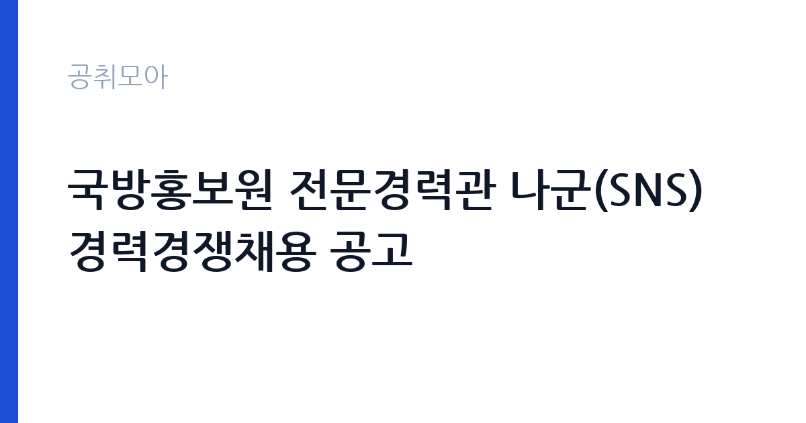

[국가기관] 국방홍보원 전문경력관 나군(SNS) 경력경쟁채용 공고
국방부 국방홍보원 · 서울 · 마감 2026-11-04 (D-12) · 출처 나라일터

한눈에 보는 모집 조건
| 기관 | 국방부 국방홍보원 |
|---|---|
| 공고명 | 국방홍보원 전문경력관 나군(SNS) 경력경쟁채용 공고 |
| 고용형태 | 정규직 |
| 근무지 | 서울 |
| 게시일 | 2026-10-23 |
| 마감일 | 2026-11-04 (D-12) |
지원자격, 이렇게 읽으세요
- 전문경력관 나군 1명
- 접수 ~2026-11-04 마감
- 세부 조건은 원문 공고문 확인
모집단위는 전문경력관 나군 1명입니다. 정규직 채용은 기간의 정함이 없는 근로계약을 전제로 합니다. 수습 기간을 두고 평가한 뒤 정규직으로 확정하는 절차가 일반적이며 기관의 인사 규정과 임금 체계를 적용받습니다. 공고문의 자격 항목에는 '경력'으로 적혀 있으므로 이 문장을 기준으로 본인 해당 여부를 먼저 판단하십시오. 서류 단계에서 요건을 충족하지 못하면 이후 전형을 준비할 기회가 없습니다. 학력·경력·자격 요건을 항목별로 대조해 표시해 두고, 경력은 재직증명서와 경력증명서로 입증해야 합니다. 증명서에 직무 내용이 구체적으로 적혀 있지 않으면 경력으로 인정받지 못하는 경우가 있으니 발급 전에 기재 내용을 확인하십시오. 자격증은 유효 기간과 등록 상태까지 확인해야 하고, 자격 취득 예정자로 지원하려면 공고문에 예정자 허용 조항이 있는지 반드시 봐야 합니다. 응시 자격 판단이 애매하다면 접수 전에 채용 담당 부서로 문의하는 편이 안전합니다. 서류 제출 후에는 소명 기회가 없습니다.
이 공고의 포인트
이 공고의 첫 번째 포인트는 고용 형태입니다. 수습 기간 평가를 통과하면 기간의 정함이 없는 신분이 되어 고용이 안정됩니다. 두 번째는 모집단위가 분명하다는 점입니다. 전문경력관 나군 1명 단위로 선발하므로 배치 이후 담당 업무의 범위를 미리 가늠할 수 있습니다. 세 번째는 근무지입니다. 서울특별시 용산구 기준으로 근무지가 정해져 있어 통근 시간과 비용을 함께 계산해야 합니다. 접수 기간은 2026-10-29부터 2026-11-04까지로 길지 않아, 공고를 늦게 확인하면 준비 시간이 그대로 줄어듭니다. 처우와 근무 형태가 표로 정리되어 있어 비교해 보기에 편한 공고입니다.
전형은 어떻게 진행되나
선발 절차는 원문 공고문에 단계별로 적혀 있습니다. 서류전형과 면접전형 외에 직무수행능력 평가가 붙는 경우가 있습니다. 평가 방식은 공고문에 구체적으로 적혀 있으므로 어떤 항목에 배점이 높은지 먼저 파악하십시오. 면접에서는 지원 동기보다 실제 업무 경험에 대한 질문이 많고, 답변의 구체성이 평가를 가릅니다. 전형 일정은 서류 마감 이후 빠르게 진행되므로 연락 가능한 번호를 정확히 기재하고 문자와 메일을 수시로 확인해야 합니다. 최종 단계에서는 결격사유 조회와 신체검사가 진행됩니다. 면접조 편성과 대기 시간이 공지되므로 당일 도착 시간을 여유 있게 잡으십시오.
원문에서 확인한 전형 방식
국방홍보 전문기관인 국방홍보원에서 일할 창의적이고 역량 있는 직원을 다음과 같이 공개 모집합니다. ㅇ모집분야 : SNS ㅇ선발직급 : 전문경력관 나군, 1명 ㅇ고용형태 : 정규 공무원 ㅇ자격요건 : 경력 ㅇ접수기간 : 26.10.29.~26.11.4. ㅇ응시방법 : 등기우편접수 ㅇ문의처 : 국방홍보원 경영지원부 인사총무팀(02-2079-3131) ㅇ응시자격 및 제출서류 등 자세한 사항은 붙임 공고문을 확인하시기 바랍니다.
이런 분께 추천해요
- 서울특별시 용산구에서 출퇴근이 가능한 분
- SNS 홍보 직무 경험이나 관련 자격을 갖춘 분
- 정규직 조건과 근무 기간을 확인하고 지원할 수 있는 분
지원 전 체크리스트
- 응시자격 요건을 충족하는가 — 경력은 증명서로 입증해야 합니다
- 수습 기간과 정규직 전환 조건을 확인했는가
- 제출서류 목록을 모두 준비했는가 — 누락 시 서류 단계에서 탈락합니다
- 접수 마감 2026-11-04 이전에 접수 방식을 확인해 제출했는가
모집 일정과 제출 타이밍
접수는 2026-10-29에 시작해 2026-11-04에 마감됩니다. 공고 게시일 2026-10-23부터 계산하면 준비 기간은 약 12일입니다. 공고문에 적힌 접수 방법은 '등기우편접수'이므로, 온라인·방문·우편 중 어느 방식인지에 따라 제출 일정이 달라집니다. 우편 접수는 도착 기준으로 판정되는 경우가 많아 마감일 소인만 믿으면 안 됩니다. 임용 예정일이 빠르게 잡히는 공고이므로 현재 일정과 겹치지 않는지 미리 확인하십시오. 서울 근무지는 대중교통 접근성이 좋은 대신 주차와 통근 시간이 변수입니다. 출퇴근 경로를 미리 확인하십시오.
직무 이해하기: 국가기관
국방홍보원은 국방일보 발행과 방송·뉴미디어 콘텐츠 제작을 담당하는 국방부 소속 홍보 전문기관입니다. 서울 용산 청사에서 국방 정책과 군 관련 소식을 영상과 온라인 채널로 전달합니다. 국방홍보원은 국방 정책과 군 관련 소식을 국민에게 전달하는 홍보 전문기관입니다. SNS 담당은 채널별 콘텐츠 기획과 운영, 반응 분석을 맡습니다. 직무 교육은 입사 후 기관 자체 계획에 따라 진행되므로 사전 경험이 없어도 시작할 수 있습니다.
자기소개서 작성 팁
SNS 홍보 지원서는 직무 연관성을 앞세우는 것이 핵심입니다. 첫 문단에 지원 직무와 본인 경험을 한 문장으로 연결하고, 이어서 담당했던 업무의 규모와 결과를 수치로 제시하십시오. 구성은 지원 동기, 직무 경험, 기여 방안 순서가 무난합니다. 지원 동기는 국방부 국방홍보원의 사업 중 본인이 관심을 가진 부분을 한 가지로 좁혀 서술하고 추상적인 표현은 줄이십시오. 직무 경험은 담당했던 업무와 규모, 결과를 수치로 제시하면 설득력이 올라갑니다. 기여 방안은 입사 후 첫 3개월과 1년 계획으로 나눠 쓰면 준비도가 드러납니다.
면접 준비 포인트
면접에서는 SNS 홍보 직무를 얼마나 이해하고 있는지, 그리고 국방부 국방홍보원의 사업을 어느 정도 알고 있는지 확인합니다. 답변은 상황, 판단, 조치 순서로 정리하면 전달이 분명해집니다. 답변 시간이 짧게 정해져 있는 경우가 있으므로 핵심 문장을 먼저 말하고 근거를 붙이는 방식이 유리합니다.
급여·근무조건 읽는 법
정규직 채용은 수습 기간 평가를 통과하면 기간의 정함이 없는 신분이 되어 고용이 안정됩니다. 공공기관 정규직은 기관의 직급별 임금표와 성과급 규정을 적용받고, 기본연봉에 경영평가 성과급이 더해지는 구조가 일반적입니다. 2026년 적용 최저임금은 시급 10,320원, 월 환산 2,156,880원(고용노동부 고시 제2025-47호)이며, 공무원 신분으로 임용되는 직위는 별도 봉급표를 적용받습니다. 기본연봉만 공개되고 성과급·수당은 공고문에 없는 경우가 많으므로, 지원 전 처우표와 인사규정을 함께 확인하십시오. 전문경력관 나군은 공무원보수규정 별표 3의2 봉급표를 적용받습니다. 2026년 기준 나군 1호봉 월 2,317,100원, 10호봉 월 3,183,000원, 20호봉 월 4,001,300원입니다(공무원보수규정 별표 3의2, 2026년 봉급표). 여기에 정액급식비·직급보조비·명절휴가비·성과상여금이 별도로 붙습니다. 같은 원(국방홍보원)의 2026년 일반임기제 채용에서 방송무대주사보 연봉한계액 상한이 6,892만 2,000원, 공업서기보가 4,855만 7,000원으로 공고된 사례가 있어(퍼블릭타임스 2026-07-24 보도), 임기제와 전문경력관의 상한 구조가 다르다는 점을 함께 보십시오. 위 수치는 공개된 봉급표·보도·유사 공고 기준이며, 이번 공고의 확정 금액은 첨부 공고문 처우표에서 확인하십시오. 실수령액을 계산하려면 세금과 4대 보험료를 빼야 합니다. 공고문에는 세전 금액만 제시되는 경우가 많으므로, 월 급여에서 약 9% 안팎의 공제가 발생한다고 보고 대략적인 수령액을 가늠하십시오. 부양가족 수와 비과세 항목에 따라 차이가 나므로 정확한 금액은 급여 담당 부서에 문의하는 것이 가장 확실합니다. 수당 항목과 지급 주기도 함께 확인하십시오.
자주 묻는 질문
- 선발 인원과 직급은 어떻게 되나요?
이번 공고의 모집단위는 전문경력관 나군 1명입니다. 직종별 인원과 직급은 공고문 모집분야 항목에 표로 제시되어 있으니 원문에서 확인하십시오. - 근무지는 어디인가요?
서울특별시 용산구입니다. 세부 근무지와 출퇴근 조건은 원문 공고문의 근무예정지 항목에서 확인할 수 있습니다. - 보수는 얼마인가요?
정규직 신분에 따라 국방부 국방홍보원의 임금 규정 또는 보수규정을 적용받습니다. 본문에 확정 금액이 없으므로 첨부 공고문 처우표에서 기본급과 수당을 나눠 확인하십시오.
함께 보면 좋은 공고
[국가기관] 2026년 국립수목원 공무직근로자 채용공고 — 마감 2026-11-06[국가기관] 2026년 통일부 전문임기제 다급(영상PD) 경력경쟁채용 공고 — 마감 2026-11-02[국가기관] 2026년 제3회 공무직 근로자(행정사무원, 경비원, 청소원) 채용 공고 — 마감 2026-11-03출처: 나라일터 공개정보를 바탕으로 공취모아가 정리한 안내글입니다. 모집 조건·일정은 변경될 수 있으니 지원 전 반드시 원문 공고문을 확인하세요. 본 글은 정보 제공용이며 합격을 보장하지 않습니다.